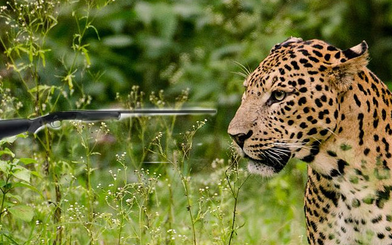
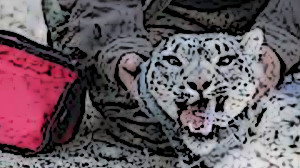
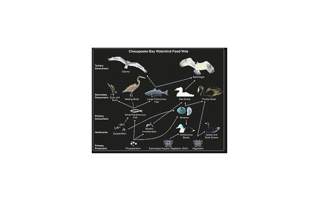
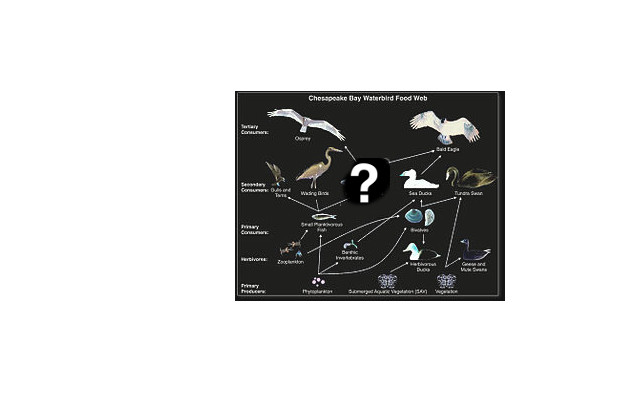
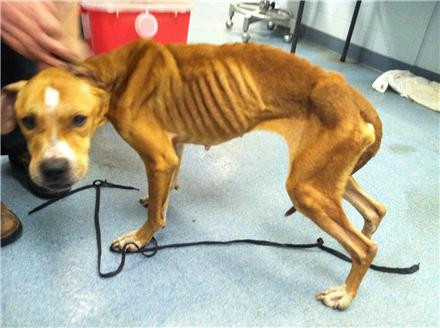
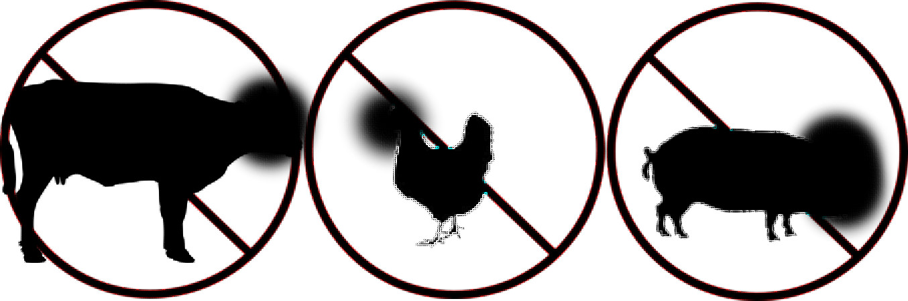
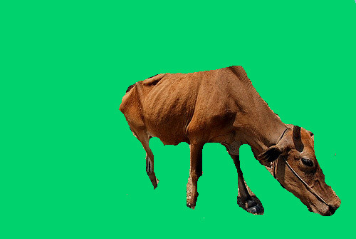
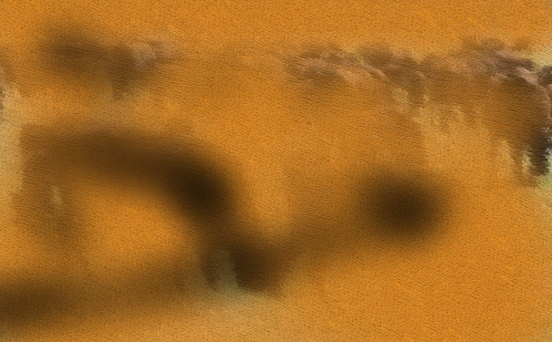
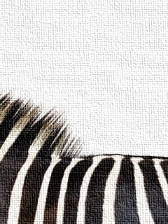

Nowadays, lots of animals were extinct because of hunting or living in a polluted environment. We have to start protecting them.
This is a clouded leopard, which is a victim of extinction. Many of them were killed by human because it's fur. They are extinct.

Clounded lepards are now protect by government.
Food chain is make up by those species, each type of animals in the chain are important.
Food chain will destroy by extinction of species.
Starving is a serious problem in the nature.
Over-hunting is the issue recently.
Global warming cause the envirinment problem, the less plants grow, the less food plan-eating animal can get.
and then carnivores will be hungry too because there are no herbivores for them to fill their stomach.
People shold be aware of the problem of extinction. We have to face the issue immediately.
